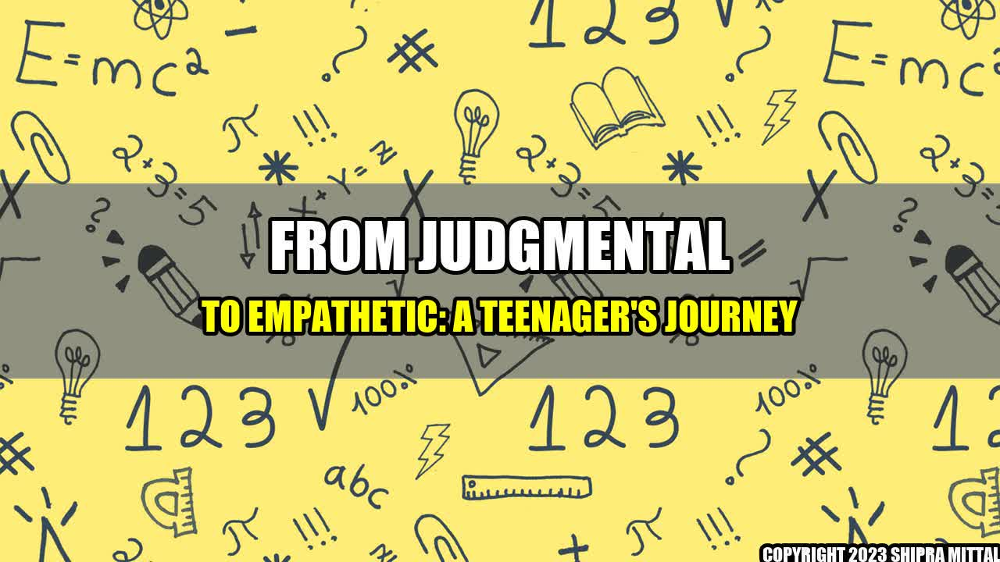

From Judgmental to Empathetic: A Teenager's Journey

When Emma started high school, she thought she knew everything. She was quick to criticize her classmates and teachers, often mocking them behind their backs. However, one day, she overheard a conversation between two girls who were gossiping about her. She felt hurt and embarrassed, realizing that she was just as guilty of judging as anyone else.
Emma decided to change her ways. She now seeks to understand the perspectives of others, instead of jumping to conclusions. She apologized to those she had hurt in the past and started to build new relationships based on mutual respect.
Emma's transformation was not easy, but it was worth it. She now feels more confident and happier, knowing that she is no longer contributing to a toxic culture of negativity.
Real Life Examples
Emma's story is not unique. Many teenagers struggle with judgmental behavior, which can cause harm to themselves and others.
- Jane, a high school student, used to make fun of her overweight classmate until she found out that the classmate had a medical condition that caused her weight gain.
- Tom, a college student, used to belittle his roommate's religious beliefs until he learned more about the roommate's personal struggles and how faith gave him comfort and purpose.
- Lucy, a young adult, used to dismiss her co-workers' opinions until she realized how their diverse backgrounds and experiences added value to their team's projects.
Top-rated Companies
Companies can play a significant role in fostering empathy and reducing judgmental behavior, both in their workplace and in society. Here are some examples:
- Google encourages employees to take courses on unconscious bias and cultural competence, and provides resources for managing stress and promoting well-being.
- Apple cultivates a diverse and inclusive environment by offering internships and scholarships to underrepresented groups, and by supporting LGBTQ+ and environmental initiatives.
- Facebook promotes responsible digital citizenship through its policies on hate speech, fake news, and cyberbullying, and provides tools for reporting and blocking abusive content.
Conclusion
In conclusion, judgmental behavior can be harmful and hurtful, but it can also be transformed into empathetic behavior through self-reflection, communication, and education. Real life examples and insights from top-rated companies can inspire and guide young people like Emma on their journey towards a more positive and inclusive culture.
- Empathy is a skill that can be learned and practiced, and it starts with listening and respecting others.
- Companies can set an example and contribute to social change by promoting diversity, equity, and inclusion, and by addressing systemic issues that perpetuate stereotypes and prejudice.
- Education and awareness are key drivers of empathy and social responsibility, and should be integrated into school curricula, workplace training, and public discourse.
Reference urls:
Further readings:
Hashtags: #empathy #judgmental #behavior #transformation #realifeexamples #companies #education #awareness #diversity #inclusion
Article category: Research
Shipra Mittal Tech Article
Share on Twitter Share on LinkedIn